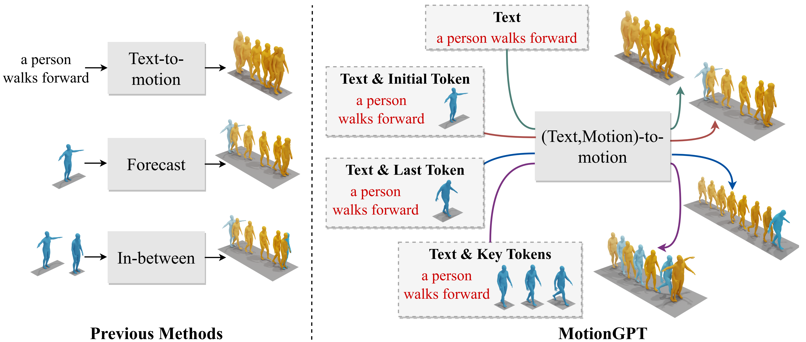

Generating realistic human motion from given action descriptions has experienced significant advancements because of the emerging requirement of digital humans. While recent works have achieved impressive results in generating motion directly from textual action descriptions, they often support only a single modality of the control signal, which limits their application in the real digital human industry. This paper presents a Motion General-Purpose generaTor (MotionGPT) that can use multimodal control signals, e.g., text and single-frame poses, for generating consecutive human motions by treating multimodal signals as special input tokens in large language models (LLMs). Specifically, we first quantize multimodal control signals into discrete codes and then formulate them in a unified prompt instruction to ask the LLMs to generate the motion answer. Our MotionGPT demonstrates a unified human motion generation model with multimodal control signals by tuning a mere 0.4% of LLM parameters. To the best of our knowledge, MotionGPT is the first method to generate human motion by multimodal control signals, which we hope can shed light on this new direction.
Compared with previous methods, MotionGPT has the unique ability to accept multiple control conditions and solve various motion generation tasks using a unified model.
Our MotionGPT (Motion General-Purpose generaTor) has the unique ability to accept multiple control conditions and solve various motion generation tasks using a unified model. Given text and poses as an input example, we organize task descriptions (Instruction) and multiple control conditions (Input) within a question template. MotionGPT fine-tunes a LLM with LoRA to generate the corresponding motion answer, which can then be decoded into human motions using a VQ-VAE decoder.
the generated motion is in orange
a person walks forward, turns and then sits on a chair
a hunched individual slowly wobbles forward in a drunken manner
a person walks forward at an angle to the right, then swings their left hand
a person stirs something with his left hand
the generated motion is in orange and we highlight the initial pose in blue (remain frozen for 0.5s)
a person slowly walked forward and returned
person is running from side to side
a person slowly walked forward while balancing
a person walks forward very slowly
the generated motion is in orange and we highlight the last pose in blue (remain frozen for 0.5s)
a person with his arms bent kicks to side with his left foot
a person turns right while walking then stops
walking backwards and then stopping
swinging hands up and down
the generated motion is in orange and we highlight key poses in blue (remain frozen for 0.5s)
a walking person suddenly gets staggered to their left, then recovers
standing on one leg and swinging it
the man dances around waving his arms and kicking his legs
a person does multiple jumping jacks